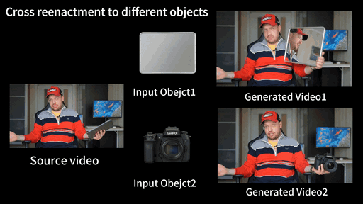
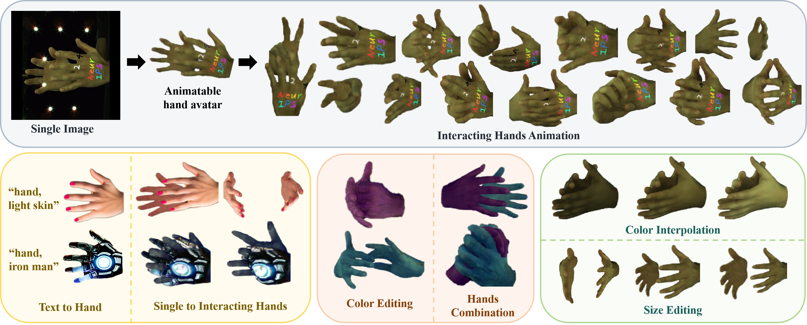
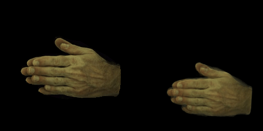
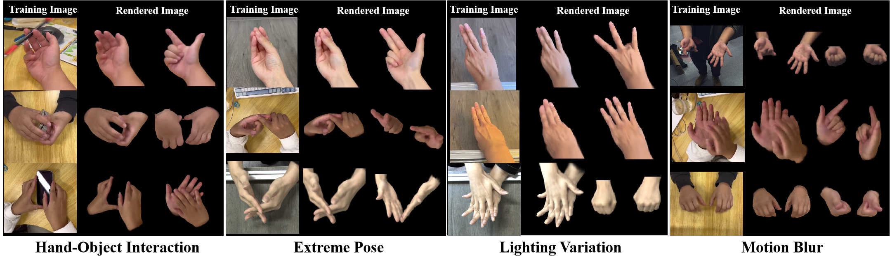
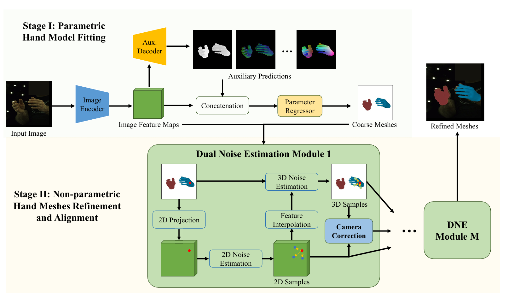

I am a student at Sun Yat-Sen University, working on computer vision, 3D reconstruction, and hand-centric human-object interaction. My recent research studies neural radiance fields, 3D Gaussian splatting, monocular 3D hand recovery, and generation of hand-object interaction videos.
I am interested in building practical 3D vision systems that can recover, animate, and generate realistic hands and hand-object interactions from unconstrained visual inputs.
Education
- M.S., Sun Yat-Sen University 2023-2026
- B.S., Sun Yat-Sen University 2019-2023
Research Interests
- 3D hand reconstruction
- Hand-object interaction
- Neural rendering and 3D generation
Selected Publications
-

GenHOI: Towards Object-Consistent Hand-Object Interaction
with Temporally Balanced and Spatially Selective Object InjectionProceedings of the IEEE/CVF Conference on Computer Vision and Pattern Recognition (CVPR), 2026 (Highlight)
[ Project Page | Paper | Code ]
-

-

-

-

Monocular 3D hand mesh recovery via dual noise estimation
Proceedings of the AAAI Conference on Artificial Intelligence 38(4), 3046-3054, 2024
[ Paper ]